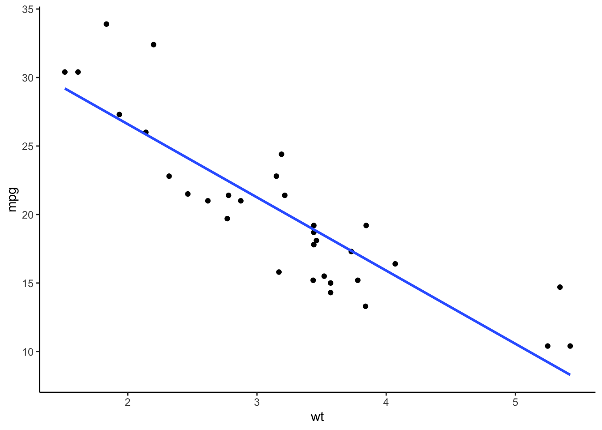

To perform a statistical analysis in R, first, you need to write a formula to describe a statistical model. For example, a formula y ~ x means that you are predictng y with x. The variable on the left side of a tilde (~) is a dependent variable, and the variable on the right side is an independent variable.
Then, you would use a function, such as lm(), aov(), or glm() to fit your model.To fit a model means that you are trying to use a mathematical model to describe data. For example, if a linear model is a good fit for your data, it means that it does a good job at describing a relationship pattern among variables in the model. For example, a linear model is a good fit to describe relationship between wt and mpg, but a curvilinear model seems to be a better fit for disp and mpg (see plots below).
After fitting the model, we will use summary() to print an output of the analysis.
library(gridExtra)
library(ggplot2)
data("mtcars")
p1 <- ggplot(mtcars, aes(x = wt, y = mpg)) +
geom_point() +
geom_smooth(method = lm, se = FALSE) +
theme_classic()
p2 <- ggplot(mtcars, aes(x = hp, y = mpg)) +
geom_point() +
geom_smooth(method = lm, formula = y ~ poly(x,3), se = FALSE) +
theme_classic()
grid.arrange(p1,p2, ncol = 2)## `geom_smooth()` using formula 'y ~ x'
For a simple regression analysis, we will need a linear model because we are testing for linear relationship between X-Y.
lm() functionThe lm() function is used to fit a linear model. Its simplest form is lm(formula, data), where formula is a statistical model and data is a data frame.
Let’s look at mtcars dataset and say that we want to predict a car’s mpg with weight wt. The formula for this regression model is mpg ~ wt. We will save this model in to an object called reg_model. This object contains information from a linear regression analysis.
We will then use summary() to output important information about regression analyses.
data(mtcars)
reg_model <- lm(mpg ~ wt, mtcars)
summary(reg_model)##
## Call:
## lm(formula = mpg ~ wt, data = mtcars)
##
## Residuals:
## Min 1Q Median 3Q Max
## -4.5432 -2.3647 -0.1252 1.4096 6.8727
##
## Coefficients:
## Estimate Std. Error t value Pr(>|t|)
## (Intercept) 37.2851 1.8776 19.858 < 2e-16 ***
## wt -5.3445 0.5591 -9.559 1.29e-10 ***
## ---
## Signif. codes: 0 '***' 0.001 '**' 0.01 '*' 0.05 '.' 0.1 ' ' 1
##
## Residual standard error: 3.046 on 30 degrees of freedom
## Multiple R-squared: 0.7528, Adjusted R-squared: 0.7446
## F-statistic: 91.38 on 1 and 30 DF, p-value: 1.294e-10The Call: section shows the formula of the model being analyzed.
The Residuals: section shows the summary of residuals, \(Y-\hat{Y}\).
The Coefficients: section show an intercept and slope estimates as well as their significance testing.
Asterisks (*) are used to noted significant values at different \(\alpha\) level.
The rest of the lines show
Residual standard error = standard deviation of residuals (errors),In this analysis, we can write a regression equation as \(\hat{Y}_{mpg} = 37.285 - 5.344X_{weight}\).
The intercept, \(b_0\), is a value of predicted Y when X = 0. In this case, it means that if a car weights zero tons, its could run 37.29 miles per a gallon of gasoline. However, in this case, the intercept does not means much because there is no car that weights zero tons.
However, we are more interested in a relationship between wt and mpg that was a slope of wt, b = -5.34. This negative relationship means that if a car’s weight (wt) changes by one ton, its fuel economy (mpg) changes in an opposite direction by 5.34 miles per gallon.
We can use this equation to predict a car’s mpg given its wt. For example, if a car weight 1.5 ton, we could use the equation to predict its fuel economy. \[ \begin{aligned}
\hat{Y}_{mpg} &= 37.285 - 5.344(1.5) \\
&= 37.285 - 8.016 \\
&= 29.269
\end{aligned} \]
If we takes an Estimate (intercept or slope) and divide by its Std. Error(SE), you will get a t-value. We can then use a t-distribution to calculate a p-value to determine statistical significance. The p-value was a probability of obtaining that t value or more extreme given that a null hypothesis is true. The null hypothesis being tested here was \(H_0 : b = 0\).
A significant test of coefficient (i.e., p < .05) suggests that, if the relationship does not exist, it is very unlikely to obtain this magnitude of slope. Thus, we infer that the relationship may exist (accepting \(H_a\)). In other words, the coefficient may not be zero.
We can calculate a 95% CI for each coefficient.
confint(reg_model) #default setting is 95% CI## 2.5 % 97.5 %
## (Intercept) 33.450500 41.119753
## wt -6.486308 -4.202635confint(reg_model, level = .99) # set to 99% CI## 0.5 % 99.5 %
## (Intercept) 32.121659 42.448593
## wt -6.881997 -3.806946The 99% CI is wider than the 95% CI because the 99% CI represents a higher chance of being correct about the population value. Thus, it includes a larger margin of error.
Even with the 99% confidence level, the CI of wt slope does not contain zero. This gives us confidence that the negative relationship between wt and mpg may really exists.
Raw coefficients are in a unit of variable Y, which make it hard to judge the strengh of relationship. To solve this problem, we could standardize the coefficient to make it easier to interpret. This standardized regression coefficients are also called beta (\(\beta\)) by some statistical programs.
# install.packages("QuantPsyc")
library(QuantPsyc)
lm.beta(reg_model)## wt
## -0.8676594The standardized coeff. of -.87 was quite a strong negative relationship.
To create a scatter plot with a fit line.
ggplot(data, aes(x, y)) to specify the data and aesthetic mapping,geom_point() to make a scatter plot,geom_smooth(method = , se = ) to add the best fit line. The method option refers to a method to create a smooth line, which would be lm for a linear model. The option se is for confidence interval around the predicted line, which is TRUE by default.library(ggplot2)
ggplot(mtcars, aes(x = wt, y = mpg)) +
geom_point() + # scatter dots
geom_smooth(method = lm, se = TRUE) + #add a linear fit line to the previous plot
theme_classic()## `geom_smooth()` using formula 'y ~ x'